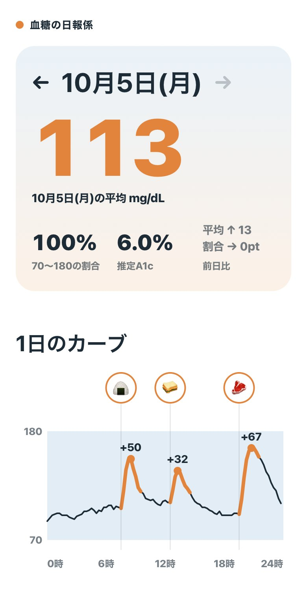

血糖の日報係
引き継ぎ
昨日の血糖を朝いちばんに1画面で
リブレのCSVとご飯の写真を入れると、前日の平均、1日のカーブ、食事ごとの上がり幅、推定A1cがまとめて出ます。ここに、作ったものと、自分で続きを作る手順を全部置きました。
デモを開く
使い方は3つ
時間は目安です。食べ方の目安を出す道具で、医療判断はしません。
1 試す
自分のデータで試す
CSVを書き出す
パソコンで libreview.com にログインし、「血糖値データのダウンロード」からCSVを保存します。スマホのLibreLinkアプリからは出せません。
デモに入れる
デモのいちばん下「データを入れる」を開いて、CSVをドロップします。丸1日そろっている最後の日が出ます。
ご飯の写真を足す
同じ欄に写真をまとめて入れると、撮った時刻で食事の位置が決まります。写真はこの端末の外に出ません。
Claude APIキーを入れた時だけ、写真から料理名と主食の量を読みます。入れなくても計算は全部動きます。
デモを開く2 毎朝
毎朝の日報をAIに出させる
デモは開いた時だけ動きます。毎朝読む形にしたい時は、AIに仕様書を覚えさせるのが早いです。
仕様書をコピー
計算式とコメントのルールが全部入った文書です。
AIに覚えさせる
Claudeなら「プロジェクト」を作って「プロジェクトの指示」に貼ります。ChatGPTならGPTsの指示に貼ります。
朝に送る
CSVと前日のご飯写真を送って「昨日の日報」とだけ書きます。
週末にまとめる
1週間分のCSVで「今週の日報」と送ると、日ごとの表と、上がり幅の大きかった食事が出ます。
返ってくる日報
# 10月5日（月）の日報 昨日の平均 113 mg/dL（前日 +13） 目標内の時間 100%（前日 ±0pt） 推定A1c 6.0%（GMI・推定値） ## 食事 ### 19:30 焼肉＋白ごはん 食前 96 → ピーク 163（+67・75分後） 主食が多かったかも。白米を減らすか、野菜から食べる 戻りが遅い。食後に10分歩く ## きょうの1つ 夕食の白ごはんを半分にして、同じ焼肉で上がり幅がどう変わるか見る
3 改造
自分のものにして続きを作る
Forkする
github.com/Yukitchy/kettou-nippouを開いて、右上のForkを押します。自分のアカウントにコピーができます。
公開する
コピーした方の Settings → Pages で、Branch を
mainと/ (root)にして Save。数分でhttps://（あなたのID）.github.io/kettou-nippou/で開けます。AIに頼む
SPEC-for-AI.mdとengine/app.jsを丸ごと渡して、この文を送ります。「やりたいこと」の所だけ書き換えてください。この仕様書と app.js を読んでください。仕様書の計算式と出力の形は変えずに、次の機能を足してください: ＜やりたいこと＞
ファイルの地図
- index.html
- 画面の骨組み。ボタンと入力欄だけ
- engine/app.js
- 中身は全部ここ。CSVの読み込み、食事ごとの計算、コメント、グラフ、写真の撮影時刻
- engine/style.css
- 見た目。白地、濃紺の文字、オレンジ、空色の4色
- packs/sample/
- サンプル3日分。CSVはLibreViewと同じ形
- SPEC-for-AI.md
- 仕様書。計算式と出力の形
使っている外部ライブラリは、写真の撮影時刻を読むexifrだけです。ビルドの手順はありません。ファイルを直してpushすれば公開ページも変わります。
次に足すとよさそうなもの
- 毎朝の自動配信
LibreViewには公開APIがありません。iPhoneのショートカットで朝にCSVを落としてAIへ送るか、週に1回まとめて見る形が現実的です。
- 写真の中身の判定
app.jsのask()がClaude APIの入口です。ChatGPTを使うなら、ここをOpenAIの画像読み取りに差し替えます。 - 食事メモの手入力
写真がない食事を「12:30 カツ丼」と打てる欄。今は写真だけです。
- 週のまとめ画面
7日分の平均、目標内の割合、上がり幅60以上の食事の一覧。仕様書の4章にあります。
- 推定A1cの見せ方
病院の検査値とはずれます。画面でも「推定」のまま出してください。
仕組み
数字の出し方
1日の値
食事ごとの値
コメントの出し方
- +60以上主食が多かったかも。白米を減らすか、野菜から食べる
- +30〜59ふつうの上がり方
- +29以下緩やか。この食べ方を続ける
- 戻り2時間後が食前より30以上高ければ「戻りが遅い。食後に10分歩く」を足す
叱る言葉は使いません。「かも」「〜してみる」で書きます。
守ってほしいこと
医療判断をしない
薬やインスリンの話はしません。出すのは食べ方の目安だけです。
データを外に出さない
血糖と写真を外に送るのは、本人がAPIキーを入れた時だけにします。
A1cは「推定」と書く
確定した値のように見せません。
食べ方の目安であり、医療判断ではありません。